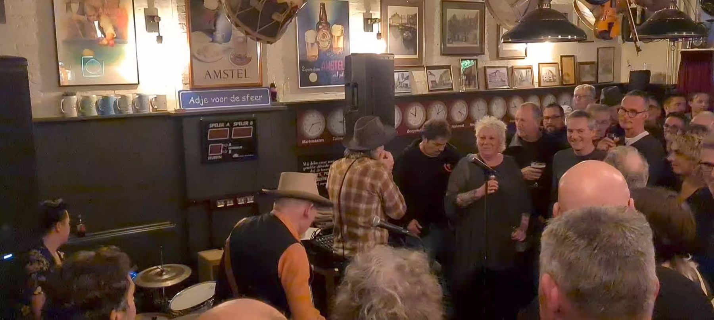
De huiskamer van Bergen op Zoom
Grand café aan de Hofstraat, met een terras, regelmatig live muziek en natuurlijk Vastenavend in het Krabbegat. Kom gezellig langs voor een grote slok.
Altijd wat te beleven
Gewoon een biertje drinken of een avond los met live muziek. Bij de Slok kan het allebei.
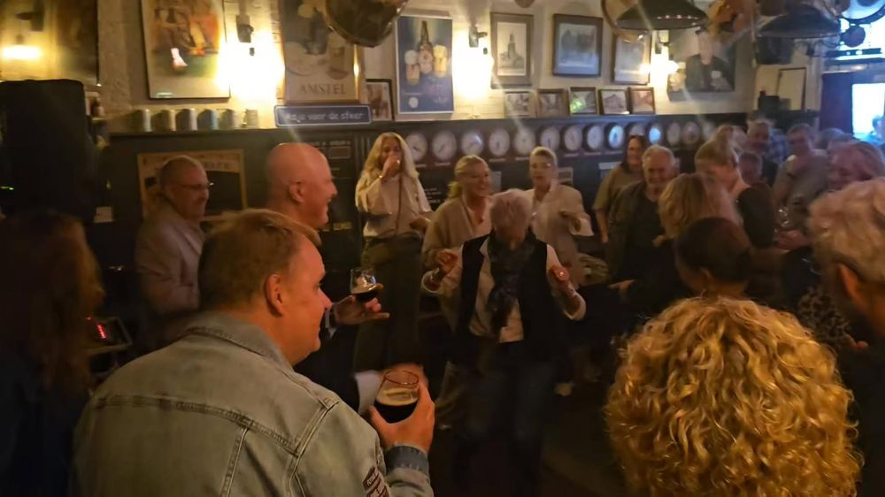
Het café
Een gezellig grand café midden in de stad, met een terras voor als het mooi weer is.
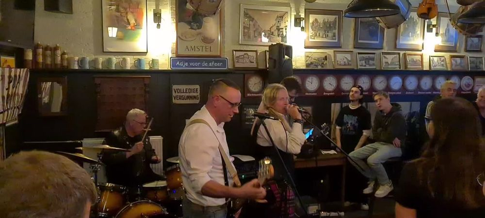
Live muziek
Regelmatig bands in het café. Zo doen we mee aan de Bergse Bluesroute en Pop Carrousel.
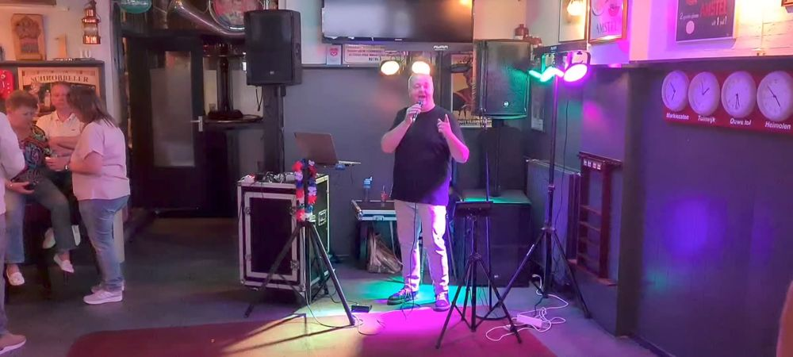
Zangers en feestavonden
Krabbefoor met Corné van Meer en Eric van Gent, John Wils op 2e Paasdag en Jukebox Vibes op Koningsdag.
Naar de agenda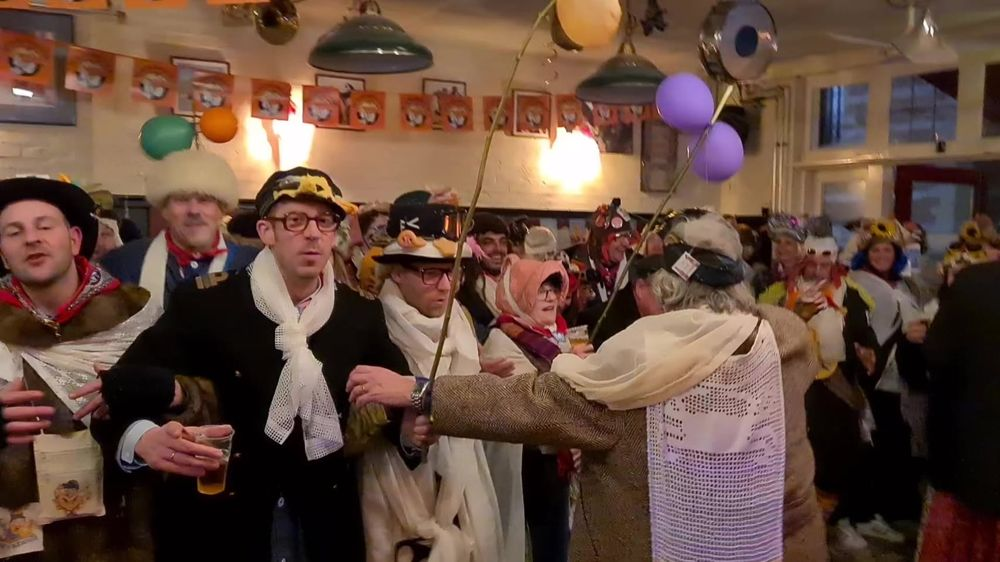
Vastenavend
Van 11-11 tot en met Vastenavend is het feest in het Krabbegat. En in de Slok.
Lees meerBinnenkort in de Slok
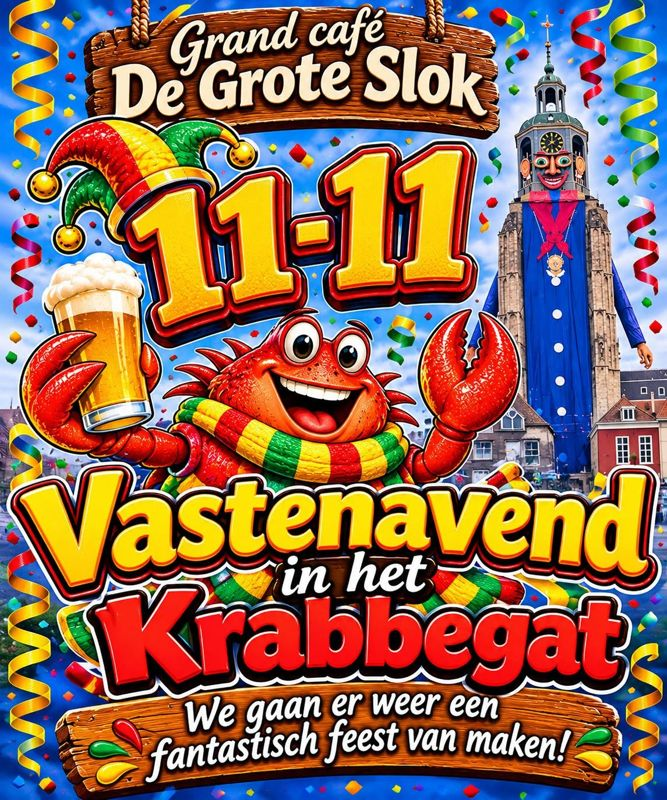
11-11: Vastenavend in het Krabbegat
De start van het nieuwe seizoen. We gaan er weer een fantastisch feest van maken!
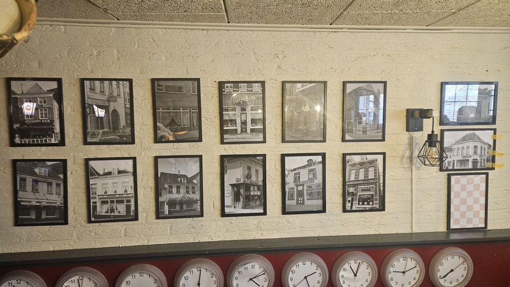
De huiskamer van Bergen op Zoom
De Grote Slok is een grand café aan de Hofstraat, midden in de binnenstad. Binnen hangen de muren vol oude zwart-witfoto's en klokken, buiten is er een terras.
Je komt hier voor een biertje met vrienden, maar net zo goed voor een avond live muziek of een feest met Vastenavend. Iedereen is welkom.
Een kijkje in de Slok
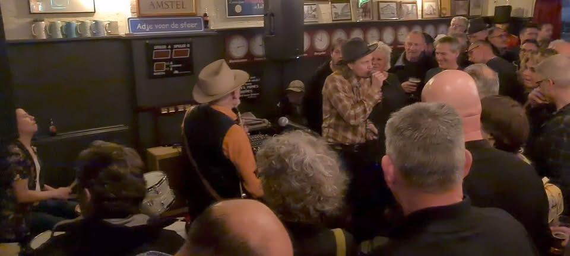
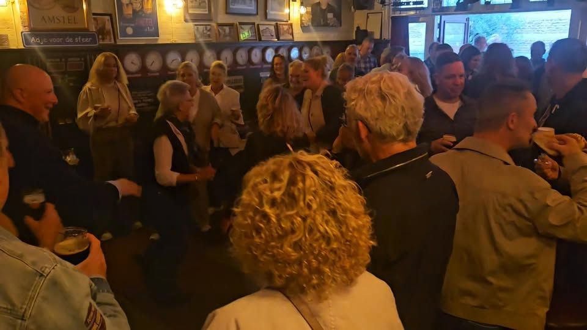
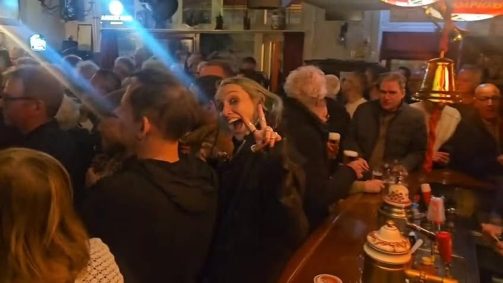
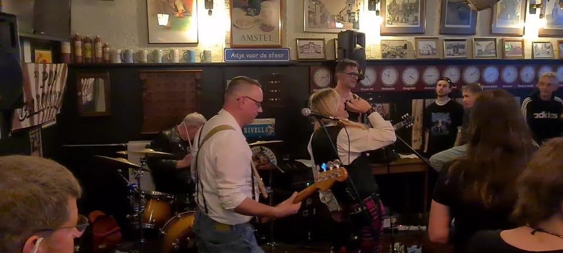
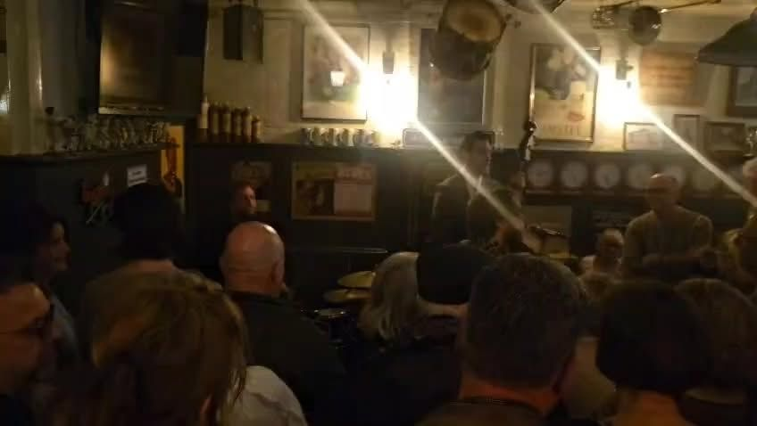
Meer foto's en filmpjes? Volg ons op Facebook.
Kom langs
Vraag over een avond of iets anders? Stuur ons een appje of bel even.
Grand café De Grote Slok
Hofstraat 5, midden in Bergen op Zoom. Je bent van harte welkom.